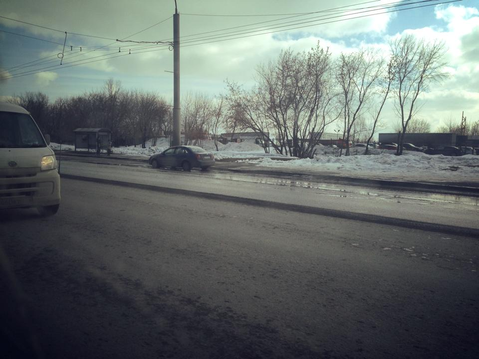

Каждый день на перекрёстке Химиков-Волгоградская стоит 2-3 машины. Пробивают колёса в яме. Так уже две недели.

Глубокая выбоина под водой в центре оживлённого проспекта.
Я удивляюсь, почему пока только колёса. Никаких знаков, разумеется, нет.
Позвонил сейчас в Кемдор. Сказали, что выедут на днях на место, затем отправят заявку в Администрацию, затем может быть поставят знак.